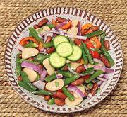

|
Mixed Bean SaladCaribbean | ||||
| Makes: Effort: Sched: DoAhead: |
2-3/4 # ** 55 min Yes |
A superb buffet salad, attractive, tasty, durable, and you can make and dress it the day before. Bean salads are popular in the Caribbean. See also Comments. | |||
|
|
15 15 10 7 7 1/3 ----- 2 1/4 1/3 1 1/2 |
oz oz oz oz oz c --- c c t t |
can Kidney Beans can Lima Beans Green Beans Onion, red Bell Pepper (1) Cilantro -- Dressing Chili Pepper (2) Lime Juice Olive Oil ExtV Salt Pepper |
Make - (1-1/2 hrs - 30 min work (hand grated))
|